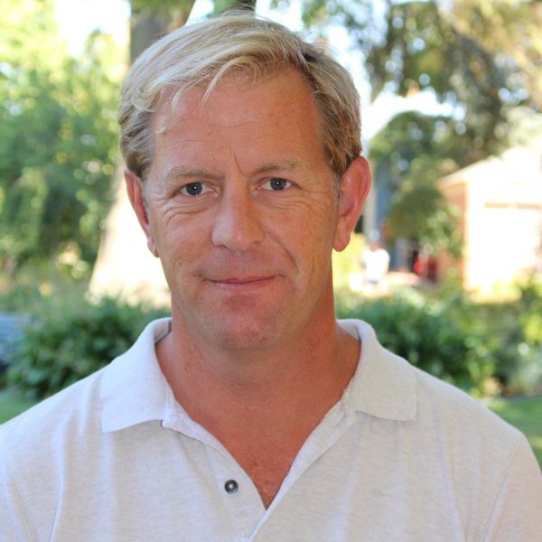

Meet the experts
Dr Kylie Kerr (publishing as Kylie Trask-Kerr) is a senior lecturer, researcher and educational philosopher with a background in secondary Philosophy, History and English teaching.
Her research examines the purposes of education, human flourishing and character, drawing on philosophy to explore understandings of the good life. Her recent work focuses on character education and the role of the humanities in cultivating ethical judgement and practical wisdom. She is Secretary of the Philosophy of Education Society of Australasia (PESA).

Dr Jonathon Sargeant is a senior lecturer and researcher in Inclusive Education and Classroom Management at Australian Catholic University, where he leads the suite of safeguarding units.
His research examines children’s participation, educational rights and wellbeing, with a focus on how young people’s perspectives inform educational practice.
His recent work on character education explores how students understand the purposes of schooling and how humanities curricula can support ethical inquiry and the development of practical wisdom.